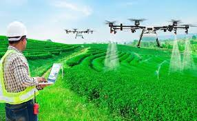

O mundo da programação
O Censo da Educação Superior de 2020 publicado pelo Instituto Nacional de Estudos e Pesquisas Educacionais Anísio Teixeira (INEP) revela que, embora as mulheres sejam maioria entre os graduandos em geral, elas representam apenas 15% dos que se formam em cursos de computação e tecnologia da informação e comunicação (TIC). Como consequência direta, a falta de representatividade também se reflete no mercado de trabalho. Segundo a Pesquisa Nacional por Amostra de Domicílios (PNAD), dos mais de 580 mil profissionais que atuam em TI no Brasil, apenas 20% são do sexo feminino. Isso cria um grande desafio para a educação e para o mercado de tecnologia: mostrar que programação também é coisa de menina.
Ler mais

A evolução do SmartPhone
A história do celular começa com seu primeiro lançamento em 1973, pelo engenheiro eletrônico Martin Cooper. Nos primeiros anos, os equipamentos pesavam muito e eram enormes, além de custarem gritantes US$ 4 mil. Hoje em dia, praticamente qualquer um pode ter um aparelho de baixo custo, pesando menos de 0,5 kg e menor do que a mão. Acompanhe com o TechTudo a história dos telefones celulares.
Ler mais

Tecnogia presente na Fotografia
A Qualcomm anunciou uma parceria com a fabricante francesa de chips de câmera Phophesee, com uma única missão: acabar com as fotos tremidas tiradas pelos celulares. A ideia da parceria é criar um sensor fotográfico que funcione de forma semelhante ao olho humano. Eles prometem que o chip tem o diferencial de processar apenas mudanças específicas.
Ler mais

Tecnogia no trabalho Home Oficce
O home office foi muito discutido (e adotado) durante a pandemia. E os profissionais que trabalham no setor de tecnologia estão entre os que mais aderiram ao trabalho remoto, segundo pesquisa realizada pela Revelo.
O levantamento destacou que mais de 79% desses profissionais considerariam trocar de emprego caso a empresa em que trabalham exigisse a volta ao modelo presencial. Outro dado que chamou a atenção: 59,6% dos entrevistados não consideram aceitar propostas de emprego com o modelo presencial e 40,4% restantes estão abertos a avaliar e aceitar trabalhos que exijam uma ida ao escritório.
Ler mais

Tecnologia a favor da saude
Por meio de recursos tecnológicos, como o diagnóstico por imagem, é possível identificar patologias de maneira ágil e precisa, o que auxilia os médicos na escolha dos tratamentos corretos, individualizados e mais humanizados. Já é possível notar também um grande progresso para o diagnóstico precoce.
Ler mais

Como A Tecnologia Influencia Na Agricultura
O uso de software sofisticado na agricultura ajuda a reduzir o consumo de insumos, fertilizantes e pesticidas. Além disso, a tecnologia ajuda a economizar em várias etapas do processo de produção no campo, o que significa que menos dióxido de carbono é emitido na atmosfera.
Ler mais